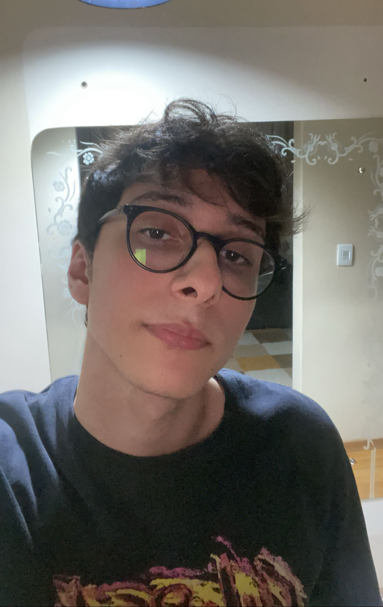

Sobre o desenvolvedor
Meu nome é Paulo Eduardo, tenho 23 anos e nasci em Cambridge, Massachusetts.
Atualmente, estou cursando Tecnologia em Análise e Desenvolvimento de Sistemas (TADS)
e este aqui é o meu primeiro site junto com o meu primeiro jogo desenvolvido.
